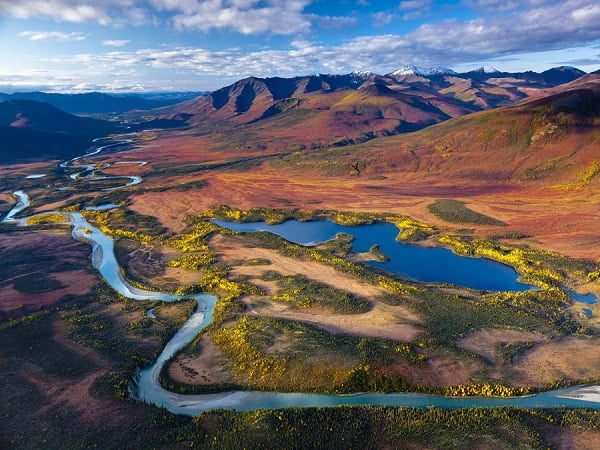
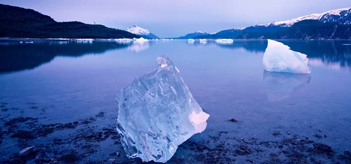
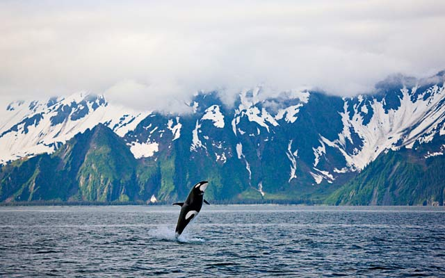

Denali National Park
Located in Southcentral Alaska

Gates of The Arctic National Park
Located in Central Brooks Range
Glacier Bay National Park
Located in the Southeast Alaskan coast
Kenai Fjords National Park
Located Southwest of Seward
